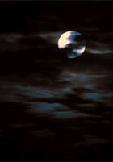
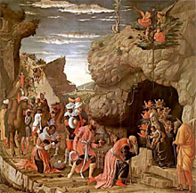

(in inglés) Mark Shea cita en su blog una nota sobre el remanido (pero siempre interesante, para mí) tema del "cristianismo de Tolkien" y su obra; toca lateralmente la comparación (también remanida) con la obra de su amigo C. S. Lewis, en especial su saga -inequívocamente cristiana- de Narnia, aplaudida por muchos... pero no por Tolkien.
Mark comenta su propia -y algo original- teoría sobre eso: su afirmación-premisa de que "Tolkien era teológicamente más astuto que Lewis" es objetada en varios de los comentarios (algunos interesantes también).
A mí no me convence demasiado el argumento de Mark.
Aunque -curiosamente- sí creo en esa "superioridad
teológica" de Tolkien.
Curiosamente, digo, porque
es Lewis el que tiene la obra -y la fama- de pensador
religioso, y en ese rol es admirado por la gran mayoría
de cristianos actuales (Ratzinger y yo incluidos); sin embargo,
continuamente tengo la impresión de que la fuerza de Lewis
es también su debilidad ... una especie de "buen sentido"
(unido a -digamos- una caridad intelectual, y fineza
de expresión) entusiasta y fundamentalmente correcto...
pero también una cierta autosatisfacción retórica que
me parece bordear la superficialidad...
No sé expresarlo
bien, y acaso sea injusto (Mark Shea dice algo similar,
pero que tampoco me satisface: "
Famoso por sus escritos teológicos, Lewis siempre
confesó ser ser un aficionado en estas materias... y ciertamente
parte de su efectividad como apologista
radica en el hecho de que él mismo no se encuentra
mucho más avanzado que sus lectores en el camino...")
El conocimiento teológico de Tolkien, en cambio,
me parece más sólido, y por eso mismo acaso,
menos manifiesto. Parece más bien esa especie
de sabiduría de raíces más profundas que las
lecturas (y las reflexiones) de apologética;
y se ve en sus aciertos -digamos- instintivos,
no esforzados, cada vez que tenía que ejercer
esa sabiduría (en sus cartas, y en su obra).
Seguramente exagero; pero esa es la impresión
que tengo desde hace tiempo.
Y en cuanto a Las Crónicas de Narnia: nunca las pude tragar (y lo intenté -me las recomendaron personas confiables...- leí tres de los siete tomos y sentí un rechazo completo). Después me enteré de que Tolkien compartía ese rechazo.
Se dice que el punto de disenso (estético?) es
la Alegoría : cosa que Tolkien no gustaba, y que
Narnia parece representar. No estoy seguro.
En cambio, me gusta esta respuesta (de los comentarios dichos):
-
I think this "allegory" distinction is overblown. If we interpret the word strictly -- an allegory as a sustained series of metaphores, each symbol being significant -- then of course Narnia is not an allegory. CS Lewis wrote original stories: they are not purely retelling of old stories in new guise. But he did write his stories with a specific agenda. His stories were didactic: he really did intend to smuggle in Christian theology under fictional form. In that sense, his writings are "allegories".
This is perhaps why Tolkien was underwhelmed by CS Lewis' approach. Tolkien's fiction was not explicitly didactic. It seems like he intended to write an essentially pagan myth, but one compatible with Christianity. We already know one such myth: it's what we know as pre-Christian history, the mythology written by God. Tolkien, as a subcreator, could do likewise, but only in literary form. His subcreation would cover a world not yet transformed by Christian revelation. Yet even a pre-Christian, pagan world would have shadows of the ultimate Creator. Good, evil, natural law, original sin still exist as they do everywhere. Lord of the Rings, then, can be Christian in this sense without an explicit Christian theology.
Christopher Wong
Claro que justificar este sentimiento me llevaría -en el mejor de los casos- otro post; y no estoy seguro de poder hacerlo ... sobre todo considerando cosas como las fábulas, los mitos platónicos ... y las parábolas de Jesús.
Pero...
PS: Ya que estamos... En aciprensa pusieron una nota "La imaginación católica de Tolkien", traducción al español de uno aparecido en la revista Crisis; bastante abarcativo y sensato (aunque donde dice "caballero de Oxford" -Oxford don- debería decir "profesor de Oxford" o algo parecido, sospecho). Está la comparación con Narnia de Lewis; pero omite mencionar la trilogía de ciencia ficción (Out of the silent planet - Perelandra....) que a mi ver tiene parecidos o mayores derechos que Narnia paraa ocupar el papel de "mitologías para nuestro tiempo -con fondo tradicional"... También puede objetarse identificaciones demasiado contundentes, como "lembas=Eucaristía", y cosas así; pero en general, está bien.
Lo descubrí en uno de esos folletos, de una biblioteca pública (con faltas de ortografía, pero bueno...).
-
Invitación a contemplar la luna

Tú que has visto las lunas literarias
que por las hojas de los libros ruedan
ven a ver esta luna. Es una simple
luna de la naturaleza.
No digas "se parece... ", no hagas una
metáfora, aunque sea
la justa, la inhallable, la que nunca
visitó el corazón de los poetas.
No cuelgues de su disco claro y puro
ningún cintajo literario. Sueña
que por vez primera abres los ojos
a una noche de luna y la contemplas.
Conrado Nalé Roxlo
Argentino (1898-1971)
... sí, sí... pero podría ser peor. O no?
Imaginate solamente que en algún momento, por el hartazgo de siempre, por buscar novedad en las cosas tradicionalmente despreciadas, por cierto gusto kitsch o por lo que sea, ser católico empieza a ser un signo de sofisticación. Imaginate el suplemento "Sí" hablando de rosarios, los chicos de Rebelde Way metiéndose en un confesionario para sublevarse contra los valores de la generación anterior...
Imaginate que ir a misa todos los días pasa a ser una cosa cool...
Ughh...
Los teólogos -y los que juegan a teólogos- discuten
el significado preciso de la promesa de Jesús a Pedro...
("las puertas del infierno no prevalecerán contra
la iglesia"), y a qué se extiende esa protección.
Yo casi diría que con eso -con no ser cool- me conformo.
Muchas cosas valiosas en los weblogs yanquis estos días. Por ejemplo...
En Video meliora..., entre otros: un "metapost" (post sobre los weblogs), que además de las reflexiones sobre la "pecaminosidad" de blogging, incluye un listado de diferentes "políticas de links" (a qué weblogs enlaza uno ? a los que suele leer , a los que recomienda leer, a los que son más populares, a... ?); también citas de Newman y Ratzinger con comentarios:
-
Puede decirse que Dios es un "justo a tiempo";
nos da nuestro de pan de cada día, no un suministro
que podemos almacenar para el futuro. Todos los días hay
que ocuparse de pedir la fe.
También trae una curiosidad: el viejo diario Pravda, el célebre medio del PC de la ex URSS, está en Internet, con traducción al inglés. Y, como muestra interesante, una pequeña nota sobre Juan Pablo II; llama la atención los elogios (a la grandeza de un anticomunista) y el relato del espionaje a que fue sometido (entre 1948-1964) por medio de un sacerdorte espía que había sido reclutado -extorsión mediante- por los servicios... Uno, de tanto leer novelas (y cruzarse con algún delirante con manías persecutorias y conspiratorias) a veces tiende a creer que nada de eso existió realmente...
En Disputations
hay material con la calidad de siempre (como dice el mismo
de Video Meliora... en Disputations se privilegia la calidad por sobre
la cantidad).
A destacar,
este post sobre "los cazadores de herejías".
-
El deporte de cazar herejías puede ser divertido, pero los cazadores
deberían estar alertas sobre el riesgo de caer en la paranoia.
Esta paranoia toma formas diferentes, pero relacionadas:
el temor a leer un libro con herejías ; el temor a leer
un libro ortodoxo pero cuyo autor también escribió un libro
con herejías; el temor a leer un libro ortodoxo de un autor
que era amigo de otro autor que escribió un libro con herejías...
... Según mi propia limitada experiencia frente a la teología moderna, el peligro no ha sido tanto el de haberme convencido de doctrinas erróneas, sino el no entender -en mayor o menor medida- lo que leía. Esto me hace sospechar que el deporte moderno de cazar herejes consiste más bien en decir "No lean a Rahner" a personas que no podrían leer a Rahner ni aunque les paguen...
Después seguimos.

«El señor [*] nos dijo que nos teníamos que reír, y que se vean
todos los dientes; así»
... explicaba después mi sobrino menor,
poniendo exactamente la misma cara de la foto.
(El "señor" es el fotógrafo de la guardería, claro está)
A estas alturas, se descarta que los periodistas de por acá lleguen a usar con alguna propiedad el idioma español:
-
...
La programación completa del Festival será confirmada más adelante. Igualmente se descarta la presencia de figuras como Horacio Salgán, Adriana Varela, Juanjo Domínguez, Ubaldo De Lío, Emilio Balcarce y la Orquesta Escuela de Tango, entre muchos otros.
(del Clarín de hoy )
-
«Ubi caritas gaudet, ibi est festivitas»
(Donde el amor se alegra, ahí hay fiesta)
San Juan Crisóstomo (347-407)
Dejo la frase en el original latino, no por pedantería (ni siquiera sé latín), sino para que se vea mejor de qué amor se trata.
PS: ... y como para reafirmar
que no me da el cuero para ser pedante: Ignacio
-que no deja pasar una- me advierte que difícilmente el latín sea el
idioma original, dado que el Crisóstomo pertenece a la Patrística Griega. Claro. Gracias.
De paso, buscando ahora en Internet la cita, (que saqué de un libro
de Pieper) encontré esta página, muy en esa visión de las cosas...
Igual, supongo la traducción latina es temprana y muy difundida
en la edad media... y -verosímilmente- fiel;
"casi original", digamos (sí... si no la gano, la empato,
como quien dice).
No sé cuándo me odio más: si cuando me pongo senteciosamente soberbio o cuando me pongo soberbiamente sentecioso (o cuando abuso de los adverbios (o de los paréntesis)).
Me llega este comentario, por lo de las fiestas:
- No creés que alguien que no comparte tus creencias
tiene derecho a rebelarse contra ritos sociales
que se imponen mucho más allá del ámbito religioso,
y cuya fundamentación no comparte?
Lo ridículo en realidad es que un ateo elija precisamente el 24 a la noche para acordarse de su familia, de los buenos sentimientos, y se ponga en pedo en nombre de... un rito que sigue como sigue a la manada.
- Respuesta impaciente levemente ofensiva
- Respuesta insultante francamente ofensiva (a la Leon Bloy)
- Respuesta combativa anti-laica, levemente reaccionaria:
- Respuesta comprensiva/concesiva levemente progresista
- En modo cristiano-y-no-me-importa-nada-más
- Distingamos
6 de Enero: Epifanía
En la misa de hoy, se lee -con la intención acomodaticia obvia- el Salmo que dice:
-
En sus días florecerá la justicia, y dilatada paz hasta que no haya luna;
dominará de mar a mar, desde el Río hasta los confines de la tierra.
los reyes de Tarsis y las islas traerán tributo. Los reyes de Sabá y de Seba pagarán impuestos;
todos los reyes se postrarán ante él, le servirán todas las naciones.
-
(la escena en
Belén, años 325-326; Elena, la vieja -y en la novela, britana
de alma viva e inquieta- madre de Constantino, está empeñada
en encontrar las reliquias de
la Cruz; se ha convertido al cristianismo no hace mucho,
tras un camino difícil...)
...
Para la Epifanía recuperó fuerzas y la víspera partió para emprender en
litera el accidentado camino de cinco millas hasta el templete de
la Natividad. No había una gran muchedumbre de peregrinos. Macario y
su gente celebraban la Epifanía en su propia iglesia. Sólo la recibió la
pequeña comunidad de Belén y la llevó al cuarto que le habían
preparado. Allí descansó dormitando hasta que una hora antes del amanecer
la llamaron y la llevaron bajo las estrellas a un establo cueva donde le
hicieron sitio en el lado de las mujeres de la pequeña y apretada congregación.
La baja cámara estaba llena de lámparas y el aire se había enrarecido.
Unas argentinas campanadas anunciaron la llegada de tres monjes
barbudos y revestidos que, como los reyes de otro tiempo, se postraron
ante el altar. Entonces empezó la larga liturgia.
Elena sabía poco griego y sus pensamientos no estaban en las palabras
ni en ninguna otra parte de la escena inmediata. Olvidó hasta su búsqueda
y estaba como muerta para todo excepto el niño en pañales, de hacía mucho
tiempo, y los tres reyes magos que llegaron de tan lejos para adorarlo.
«Éste es mi día -pensó- y ésta es mi gente.»
Tal vez percibía que su fama, como la de aquéllos, viviría en un histórico
acto de devoción; que también ella había emergido de una especie de outopia
o reino innominado y se esfumaría como ellos en el fuego encendido en
un cuarto de niños y entre libros ilustrados y juguetes.
« Como yo -les dijo a los reyes magos-, tardaron en llegar...
Los pastores, y hasta el ganado, llevaban ya mucho tiempo aquí y se habían
unido al coro de ángeles mientras ustedes estaban en camino. Para ustedes
se relajó la primordial disciplina de los cielos y brilló entre las desconcertadas
estrellas una nueva luz desafiante...
Con todo, vinieron, y no los hicieron volver. También ustedes encontraron
sitio ante el pesebre. Los regalos no eran necesarios, pero fueron
aceptados y puestos cuidadosamente porque fueron traídos con amor.
En aquella nueva orden de caridad que acababa de surgir a la vida, también
para ustedes hubo un lugar. A los ojos de la sagrada familia, no fueron menos
que el buey o el asno...
Ustedes son mis patronos especiales y los patronos de todos los que llegan
tarde, de todos los que han tenido que hacer un tedioso viaje para llegar a la
verdad, de todos los confundidos con el conocimiento y la especulación, de
todos los que a través de la cortesía comparten la culpa, de todos los que
están en peligro a causa de sus propios talentos...
Recen por mí, primos míos, y por mi pobre hijo sobrecargado; que también
él encuentre antes del fin sitio para arrodillarse en la paja.
Recen por los grandes,
para que no mueran del todo. Y recen por Lactancio, y Marcias, y los jóvenes
poetas de Tréveris, y por las almas de mis salvajes y ciegos antecesores;
y por su astuto adversario Ulises, y por el gran Longino... Por Él, que no
rechazó los regalos extravangantes, recen siempre por los hombres cultos,
retorcidos y frágiles. ¡Que no se les olvide del todo en el trono de Dios
cuando los simples entren en su reino! »
Todo Jerusalén se dio cuenta del vigor de Elena. La anciana señora
es incansable, decían todos. Pero la verdad es que estaba
cansada. El invierno se había asentado. El convento, expuesto a los
vientos, era húmedo y frío. No era así como ella había planeado su
vejez cuando estaba en Dalmacia, Parecía que las preguntas se le habían
acabado. Nadie la ayudaba. Por Navidad no tuvo fuerzas para ir en
procesión a Belén. Aquel día comulgó en la capilla del convento, permitió
a las monjas que la mimaran y pasó la fiesta acurrucada cerca del
fuego de leña que le hicieron en su cuarto.
¡Con cuánto trabajo marcharon,
tomando vistas y calculando, mientras que los pastores corrían descalzos!
¡Qué aspecto más raro tenían en el camino, atendidos por libreas de tierras
extrañas, cargados con regalos absurdos!...
Al cabo llegaron al fin de
la peregrinación y la gran estrella se detuvo.
¿Y qué hicieron? Se detuvieron para visitar al rey Herodes. En ese
fatal intercambio de cumplidos empezó aquella guerra no terminada
del populacho y de magistrados contra el inocente...
Evelyn Waugh (inglés, 1903-1966)
Hay que decir, para no dar una falsa imagen a los desconocedores de Evelyn Waugh, que esta página no es absoluto representativa (en su tono emocional) del resto de la novela; ni de su estilo.
Quizás sea la foto más apocalíptica que me toque citar...
Pero es un poco demasiado nítida... Una secta con componentes new-age, cientificistas y extraterrestres (con un "Papa" francés y ex-periodista) que clona a una "hija" de una "pareja" de lesbianas holandesas... Es como que cierra demasiado. Lamentablemente (en ese sentido) es improbable que sea verdad...
Igual, no es para dejar pasar.
Bueno. Al final, puse acá el diálogo casi completo de Iván y Aliosha Karamazov que comentaba ayer (bah, en realidad es más el alegato de Iván que un diálogo... y es la primera mitad: la segunda sería el conocido relato de "El gran inquisidor").
Siempre me extrañó un poco que entre los misterios gozosos del Rosario no se incluya La Adoración de los Reyes Magos; si de gozo se trata, uno diría que este hecho es más alegre que -digamos- el episodio de Jesús perdido y hallado en el templo... pero razones habrá, no digo que no (habrá otras significaciones, etc). Igualmente, descubrí no hace mucho que sí está incluida en la "Corona Franciscana" de las "Siete alegrías de María" (variante del Rosario). Bien.
-
Las palabras de los Reyes y de todos sus acompañantes eran
llenas de simplicidad y siempre muy conmovedoras. En el momento
de prosternarse y al ofrecer sus presentes, se expresaban más o
menos en estos términos: «Hemos visto su estrella ; sabemos que
Él es el Rey de todos los reyes; venimos a adorarlo y a
ofrecerle nuestro homenaje y nuestros presentes»....
 Estaban como en éxtasis, y en sus oraciones inocentes y afectuosas, recomendaban al Niño Jesús sus propias personas, sus familias, su país, sus bienes y todo lo que tenía algún valor para ellos sobre la tierra.
Ofrecían al Rey recién nacido sus corazones, sus almas, sus pensamientos y sus acciones.
Le pedían que les diera una clara inteligencia, virtud, felicidad, paz y amor. Se mostraban inflamados de amor y derramaban lágrimas de alegría, que caían sobre sus mejillas y sus barbas.
Se hallaban en plena felicidad. Creían haber llegado ellos mismos hasta aquella estrella hacia la cual, desde miles de años atrás, sus antepasados habían dirigido sus miradas y suspiros, con un deseo tan constante. Todo el regocijo de la promesa realizada después de tantos siglos estaba en ellos.
...
Durante todo este tiempo, María y José se hallaban penetrados
por la más dulce alegría. Jamás los había visto así; lágrimas
de ternura corrían a menudo por sus mejillas.
Los honores
solemnes rendidos al Niño Jesús, a quien ellos se veían
obligados a alojar tan pobremente, y cuya dignidad suprema
quedaba escondida en sus corazones, los consolaba
infinitamente. Veían que la Providencia todopoderosa de Dios, a
pesar de la ceguera de los hombres, había preparado para el
Niño de la Promesa, y le había enviado desde las regiones más
lejanas, lo que ellos por sí no podían darle: la adoración
debida a su dignidad, y ofrecida por los poderosos de la tierra
con una santa magnificencia. Adoraban a Jesús con los santos
Reyes. Los homenajes ofrecidos los hacían muy felices. ...
Acá está el texto completo... es bastante largo, y sólo puse lo que sigue a la entrevista de los reyes con Herodes; antes Ana Catalina cuenta con lujo de detalles el anuncio a los reyes, su historia anterior y su viaje hacia Judea.
Los nombres de los reyes que ella pone no están en la tradición ni en ningún lado, que yo sepa. Me gusta ese detalle, de que uno de ellos era tan viejo que no pudo arrodillarse ante el niño... Y lo de que María les regaló su velo, que ellos guardaron como una reliquia.
- En el principio era el Verbo,
y el Verbo era con Dios, y el Verbo era Dios.
Este era en el principio con Dios.
Todas las cosas por él fueron hechas;
y sin él nada de lo que es hecho, fué hecho.
En él estaba la vida, y la vida era la luz de los hombres.
Y la luz en las tinieblas resplandece;
mas las tinieblas no la comprendieron.
...
En el mundo estaba, y el mundo fué hecho por él; y el mundo no le conoció.
A lo suyo vino, y los suyos no le recibieron.
Mas á todos los que le recibieron, les dio potestad de ser hechos hijos de Dios,
á los que creen en su nombre.
Los cuales no son engendrados de sangre, ni de voluntad de carne,
ni de voluntad de varón, mas de Dios.
Y el Verbo se hizo carne, y habitó entre nosotros
(y vimos su gloria, gloria como del unigénito del Padre),
lleno de gracia y de verdad.
A cuento de Gironella: estuve rehojeando su libro "100 españoles y Dios". Se trata en realidad de una especie de encuesta a cien españoles (con el sólo rasgo común de ser personajes conocidos en la España del momento -1969-) con siete preguntas sobre las creencias religiosas: empezando por "Cree Ud. en Dios?", y siguiendo con opiniones sobre la inmortalidad personal, divinidad de Jesucristo, eficacia del Concilio V. II, causas de la persecución en España, vivencias personales, etc.
Respuestas enviadas por escrito (dice Gironella que aproximadamente uno de cada dos encuestados se negaron a responder), muy variadas en todos los sentidos.
Algunas páginas interesantes... no muchas; además, desconozco a la mayoría de los entrevistados.
Se destaca -por su estupidez increíble- la de Serrat (otro mentor ideológico de por acá)...La primer frase no tiene desperdicio, y da la nota del resto ... Cree Ud. en Dios?
No. Me interesa mucho más creer en el hombre como ente espiritual.. .
Y sigue. ... "su figura [la de Jesús] nos ha llegado siempre muy mitificada, desde el catecismo de Astete hasta las encíclicas de León XIII (????)... A la hora de 'explicar' las persecuciones, adjudica la culpa exclusiva a la Iglesia, como es de esperar. Y termina "Seguramente un músico dodecafónico actual se realiza mejor a través de la astronáutica y le interesa más, como sujeto inspirador, el proyecto Apolo que San Luis Gonzaga. ". Delicioso.
Pero dejemos a este infeliz (Dios, danos ateos inteligentes).
Más divertida resulta alguna respuesta de Dalí.
El tipo no es santo de mi devoción -ni en sus payasadas ni en su arte-
pero ... me gustó lo que responde
a la pregunta
sobre la "eficacia del Concilio" (que casi todos
-ateos y creyentes- responden con una rara unanimidad ... a favor):
«Intimamente no soy partidario del Concilio, pero por razones
propias de mi estructura jesuítica lo defiendo.
»
Ana María Matute es una de los pocos ateos que responden
con sencillez, sin caer en vanidades y estupideces
seudocientíficas ("Cree que hay algo que sobrevive en nosotros
a la muerte corporal? " "Sí. la transformación atomizada
de la materia. Está comprobado" , responde un periodista.
"La entropía es una de esas leyes -al menos es lo que se cree
por ahora- que podría explicar el origen del universo",
dice un psiquiatra)...
Hay también testimonios de ateos que, aunque sean pobres
cuando se ponen a dar razones y a atacar, tienen su fuerza
cuando hablan de sentimientos y hechos personales:
una cantante cuenta que su padre ( un santo según ella,
perseguido y encarcelado) cuando le llegó el tiempo de la
vejez, que podría haber descansado en paz, enfermó de cáncer...
y ella se metió en una iglesia a ofrecerle a Dios diez
años de su vida para dárselos a su padre; y el ruego "no
fue escuchado", y "saqué la conclusión de que
la imagen a que me había dirigido era realmente de madera
y solamente de madera".
Otro hablaba de su escándalo ante el sufrimiento de los animales,
de las vivisecciones, de que Dios no se ocupara de eso;
eso era para él un motivo suficiente para negar la bondad (y por
lo tanto la existencia) de Dios.
Del otro lado, las respuestas de los católicos "públicos"
por momentos resultan algo exasperantes,
por lo previsibles y sentenciosas ... pero hay de todo.
Extrañamente afín me resulta una tal Lilí Alvarez (deportista y escritora).
Vale también lo que recuerda Manuel Aznar, sobre la respuesta
irritada que dio Unamuno al transeunte que le preguntó
a boca de jarro si "creía en Dios"...
En verdad, a veces no estoy seguro de que responder con un simple "Sí" a la pregunta no sea -según el caso y el punto de vista- una hipocresía, un autoengaño, o una impudicia... Sobre todo cuando el decir "yo creo en Dios" resulta algo demasiado parecido (está en el mismo plano) a decir "yo soy socialista" o "yo estoy a favor/en contra de [...]"; hay algo equivocado, insincero ... profanador, en esto de usar a Dios como un objeto de nuestras "opiniones" o de nuestras preferencias...
Pero lo que quiero decir es algo demasiado oscuro para tratar
de aclararlo en este post...
Digamos por ahora (con poca seguridad, rigor y claridad):
la fe en Dios tiene que estar más relacionada con
la aceptación de su universo
(en el sentido de Simone Weil, de su "amor implícito a Dios";
en la "obediencia y alegría"
de Kierkegaard; Dios Creador, antes que nada; sentir
el peligro del panteísmo) que con una certeza
intelectual sobre su existencia.
Se me ocurre ahora esto: preguntarle a Aliosha, el personaje de "Los Hermanos Karamazov", de Dostoyevsky. Aliosha es creyente, ya se sabe; es el tipo del santo dostoyevskiano, y fue una especie de guía y modelo en mi adolescencia.... Por los principios de la novela (página 168 en mi edición de 933 páginas) el padre, medio borracho, interroga a sus hijos:
-
-Dime Iván, ¿existe Dios o no existe ? Pero habla en serio.
Ahora necesito que me lo digas en serio.
- No, Dios no existe.
- Aliosha: existe Dios ?
- Dios existe.
- Iván ... existe la inmortalidad, la que sea, muy pequeña si quieres, ínfima ?
- Tampoco existe la inmortalidad.
- ¿Ninguna?
- Ninguna.
- Pero ... se trata de un cero absoluto o de algo muy pequeño ? ¿No existirá acaso alguna cosita... ? No puedes decirme de verdad que no existe aboslutamente nada !
- Cero absoluto.
- Aliosha: ¿existe la inmortalidad?
- Existe.
- ¿Dios y la inmortalidad?
- Existen Dios y la inmortalidad. En Dios está la inmortalidad.
- Hmmm... lo más probable es que tenga razón Iván... Señor, .... y pensar cuánto ha dado el hombre por la fe, cuánta fuerza ha dedicado inútilmente a este sueño durante miles de años ! ¿Quién se ríe del hombre de este modo ? ...
Al día siguiente, Aliosha habla con Lisa (pag. 272) e inesperadamente suelta esto:
-
-.... y sin embargo, yo ... quizás no creo en Dios.
- ¿Que usted no cree? ¿Qué le pasa? - articuló Lisa en voz baja y contenida.
Pero Aliosha no contestó. En sus palabras excesivamente repentinas había algo demasiado misterioso y personal, algo que para ni él mismo resultaba claro, pero que sin dudas lo torturaba...
-
- Ayer, en la sobremesa en casa del viejo, te quise hacer enojar
adrede, y vi cómo se te encendían los ojos... Pero ahora nada
tengo en contra de charlar contigo ...[...] Bueno, imagínate
que acaso yo también admito la existencia de Dios. - Iván se echó
a reír- Te asombra, ¿ no ?
- Sí, claro... a no ser que también ahora estés bromeando.
- ... figúrate que, al final resulta que no admito
este mundo de Dios, y aunque sé que existe no lo acepto
de ningún modo. Entiéndeme bien: no esa Dios a quien
rechazo, sino al mundo, al mundo creado por El....
no lo acepto ni quiero aceptarlo...
-
- ... Si es así, si las víctimas no pueden atreverse
a perdonar, ¿dónde está la armonía?
¿Y acaso hay en todo el mundo un ser que pueda y tenga
derecho a perdonar ? No quiero la armonía, no la quiero
por amor a la humanidad. Prefiero quedarme con los sufrimientos
sin reparar. Mejor es que me quede con mi dolor sin vengar y
con mi indignación pendiente, aunque no tenga razón.
Demasiado alto han puesto el precio de esa armonía,
no da nuestro bolsillo para pagar semejante boleto de entrada.
Y si soy un hombre honrado, tengo la obligación de devolverlo
cuanto antes. Y eso es lo que hago. No es que no admita a Dios,
Aliosha; me limito, con todo respeto, a devolverle la entrada.
-
- ¿Y todo esto porque tu vejete apesta ? -exclamó Rakitin,
presa del más sincero asombro.
¿Es posible que tú creyeras que empezaría a hacer milagros
a diestra y siniestra ?
- He creído, creo, quiero creer y creeré; qué más quieres! -gritó irritado Aliosha.
- Absolutamente nada, mi palomito... Uf, diablos! Esas cosas ya nos las cree ni un escolar de trece años... aunque por mí, al diablo...Así pues, ahora estás enojado contra tu Dios, te has rebelado; como si te hubieran pasado por alto en un ascenso, como si no te hubieran concedido una orden ! Ah, qué gente!
Aliosha miró largamente a Rakitin, con los ojos entornados, en los que repentinamente brilló algo... pero no era irritación.
- Yo no me rebelo contra mi Dios... pero "no acepto su mundo" -dijo, con una sonrisa crispada.
Poco después, tras la reunión con Gushenka, de vuelta al eremitorio, Aliosha "se abandona", escucha semidormido la historia del milagro de Caná, y sale bajo las estrellas, y besa la tierra (pag 442).
-
No sabía por qué la abrazaba, no entendía por qué
experimentaba un deseo tan irresistible de
besarla, de cubrirla de besos; pero la besaba
llorando, regándola con lágrimas, y juró
frenéticamente amarla, quererla por los siglos
de los siglos. "Rocía la tierra con tus
lágrimas de gozo, y ama esas lágrimas tuyas... ",
resonaron las palabras en su alma. ¿Por qué lloraba?
En su entusiasmo, lloraba incluso por aquellas estrellas
que lo miraban desde las profundidades
del abismo, y "no se avergonzaba de su frenesí".
Quién sabe una conversión de ese tipo no es necesaria a tantos que responden (respondemos) con esa tranquila seguridad a la pregunta de Gironella o Fiodor Karamazov: "Sí, yo creo en Dios" ... mientras, quizás, nuestro ángel de la guarda nos mira con ojos reprobatorios ("no, hombre, no; no se trata de eso...")
El padre G. Podestá rezonga en su sermón de Nochebuena contra eso que suele escucharse/verse por ahí (la semana pasada lo vi en un pasacalle de una iglesia protestante), de que en la Navidad se "festeja el cumpleaños de Jesús".
Tal vez tenga razón.